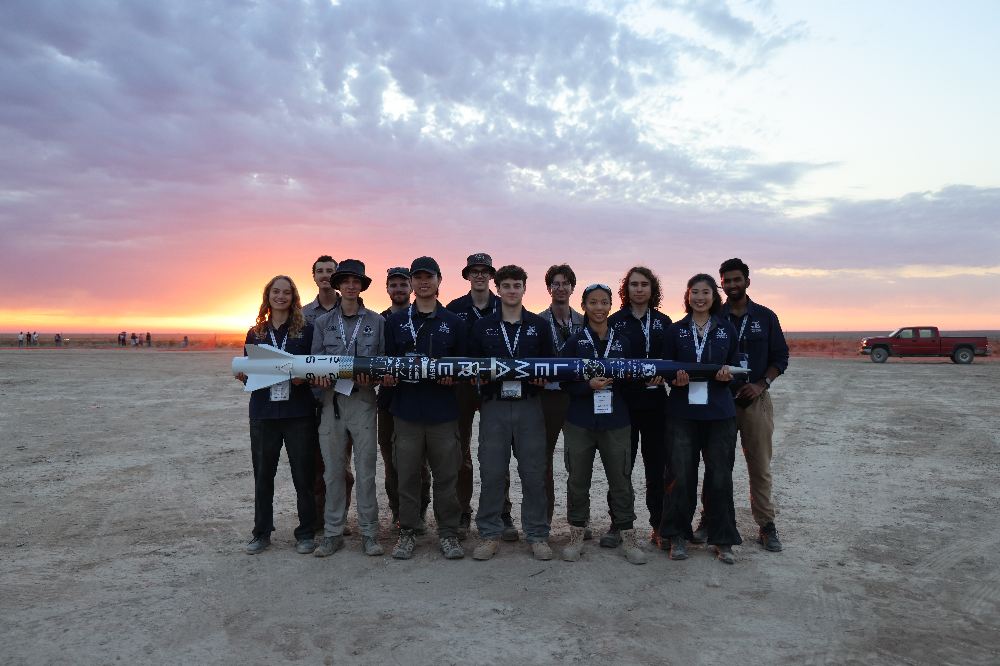
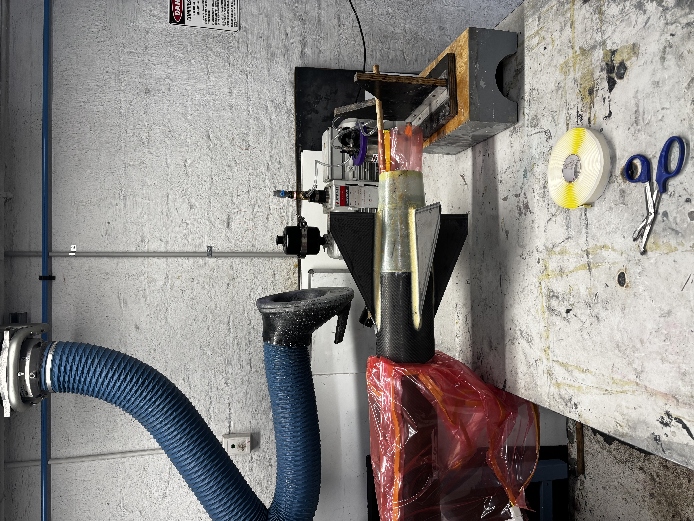
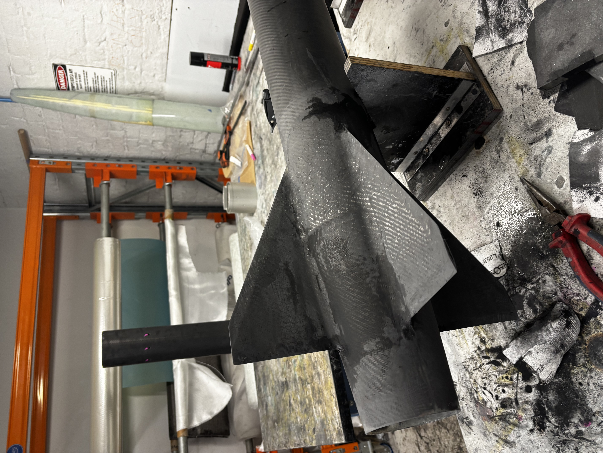
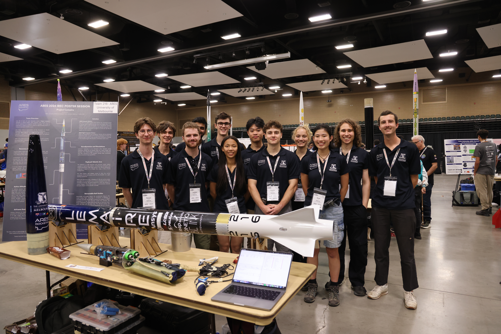
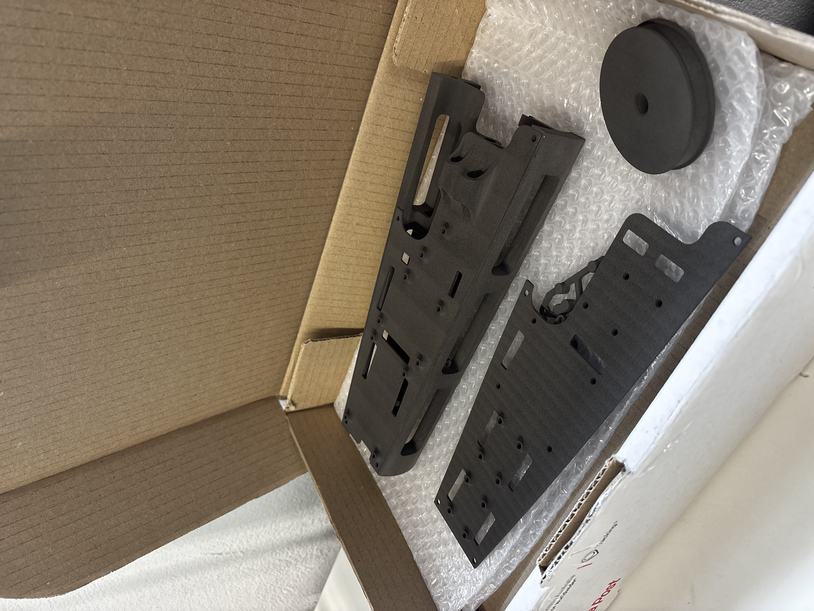
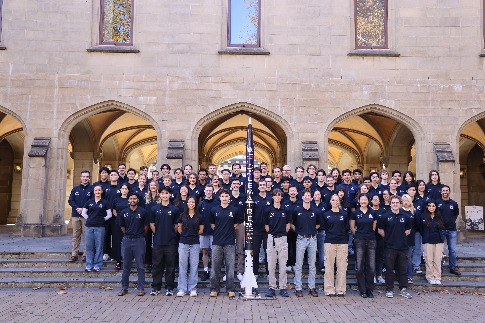
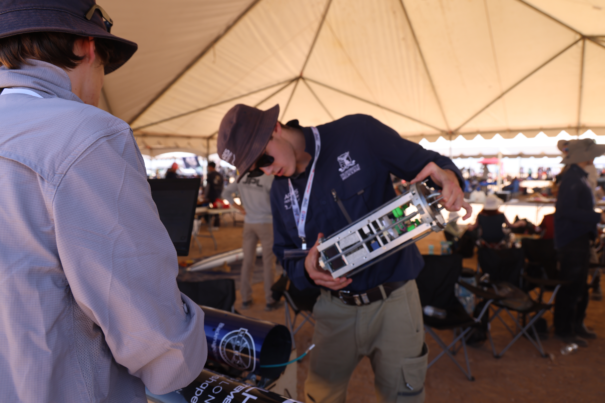
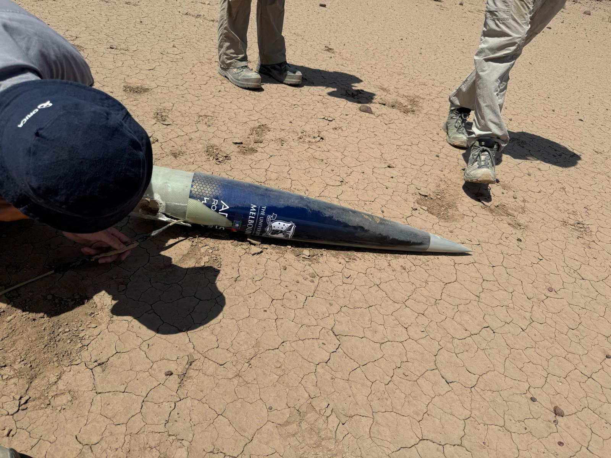
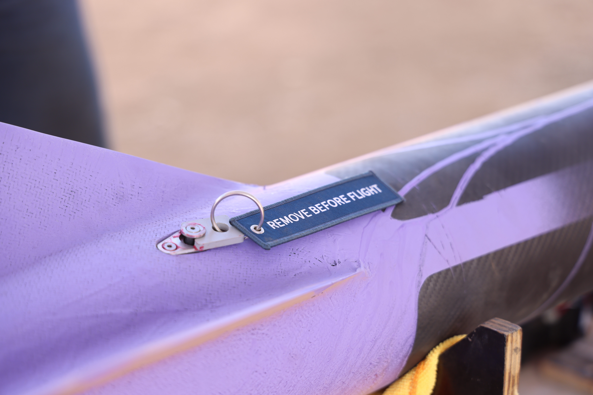

ARES Rocketry's 2025 IREC competition entry, flying on an O5500X to 30,000 ft. Named after Diane Adrienne Lemaire, the first female engineering graduate at the University of Melbourne. I led the structures team, responsible for the entire rocket design and manufacturing, including all internal bulkheads and interfaces. 4th in category, 35th overall.

The fin can was the centrepiece of my structures work on Lemaire, and the component I am most proud of from the entire build. The goal was twofold: build the strongest fin can to survive O5500X flight conditions, and produce the best looking fins at the competition. Both objectives were met.
The fins use a full through-wall construction, mounted directly to the 98mm motor tube. Leading and trailing edges were hand blended for an ultra-clean aerodynamic profile, more work than standard chamfering, but the result speaks for itself. Structural fillets were applied using Epikote MGS BPR 135 bonding paste in the same manner as my L3 fin can, then finished with a tip-to-tip carbon layup to tie everything together and maximise root chord strength.
Lemaire also features a boat tail, a tapered aft section that reduces base drag and gives the rocket a cleaner aerodynamic profile. The compliments from other teams at competition for the fin work were genuinely unreal.

The fin can ready for tip-to-tip

Freshly debagged fins before final finishing
The avionics bay was a good design challenge, cramming a significant amount of hardware into a tightly constrained space while maintaining accessibility and reliability. The bay had to house two commercial flight computers, a commercial GPS, ARES' own custom flight computer and GPS system, and a CAN bus harness running the length of the rocket.
The CO2 canister mounting for the sliding coupler recovery system required creative packaging, and finding space for the magnetic arming switches within the envelope added further constraint. The solution was a parametrically designed, SLS nylon printed sled, resulting in the most compact avionics bay ARES has produced to date.

The completed avionics bay in the foreground with recovery system attached

Fresh SLS Nylon avionics bay and sleds ready for avionics attachment
IREC was an incredible experience. The Australian contingent punched well above their weight, every Aussie team had the best looking rockets at the competition by an absolute long shot, and the standard of engineering on display was something to be proud of. The competition was as much about seeing how other teams approached design challenges as it was about the results, the camaraderie between teams from across the world made it very memorable.
Lemaire represented ARES' most advanced rocket to date (now shadoweded by Project Odyssey), but the scoring unfortunately did not. Our rocket passed all the flight readiness checks with flying colours, the technical report was an incredibly strong document, with the flight performance unfortunately costing us significant points.

The whole ARES team before departing for IREC

Inspecting the Payload before flight vehicle integration
After a relatively successful test flight campaign, flying Test Lemaire, a rocket with smaller booster tube to fly within altitude restrictions at our test site, the flight at IREC was disappointing. Lemaire banked hard off the rod due to the retractable launch lugs, causing horizontal velocity at apogee to be 5 times higher than expected, causing the main chute to break free internally and the rocket to descend under the drogue chute.
The post-flight picture was telling though, with much of the airframe in a good state, although coupler and extension tube had reasonable damage enough for the judges to strike all recovery points, and thus our hopes of a podium finish. Recovery remains a dark horse of rocketry globally, with no one right way to do it, and our method was incredibly novel and relatively unproven at O5500 flight conditions. The clamp force the retractable launch lugs was not something we encountered during launches, with the result being our next iteration of these lugs to follow a jaw-mechanism for relatively low clamp force.
Despite the dissapointment of the flight, the entire experience influenced my own design methodology that I have since imparted onto my Level 3 rocket, and also shapes the way Project Odyssey is approaching flight-critical recovery and launch systems. Being Structures lead pushed me to Team Lead on Project Odyssey, and will be the most technically advanced rocket ARES has made with a fully student researched and developed engine. IREC 2027 we will return with our SRAD hybrid contender, and I am excited to see the improvement as both Team Lead and Flyer of Record.

Nosecone section after landing

Retractable Launch Lugs on Test Lemaire